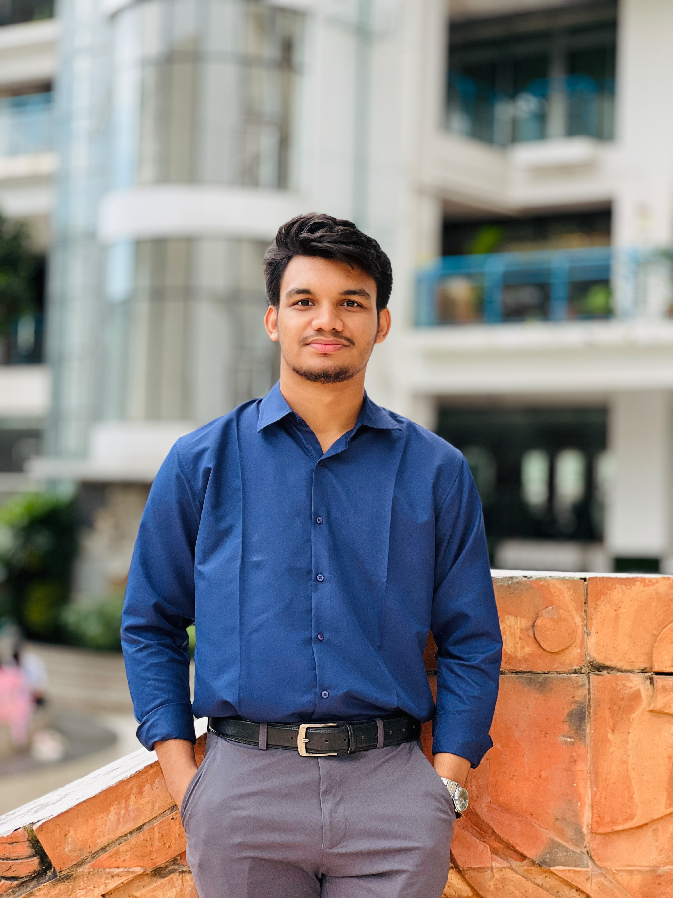

Prottay Mojumder
AI/ML Researcher
Aspiring AI/ML Researcher focused on Deep Learning, Reinforcement Learning, and Scientific Machine Learning. Seeking PhD opportunities.

Aspiring AI/ML Researcher focused on Deep Learning, Reinforcement Learning, and Scientific Machine Learning. Seeking PhD opportunities.